What are we solving?
In extremely low-light environments, conventional cameras fail — far too few photons reach the sensor to form a usable image. Single-photon detectors can sense individual photons, but the resulting data is extremely sparse and noisy.
Our goal: train a deep learning model to convert these sparse photon measurements into clean, high-quality RGB images.
Clean 800×800 RGB image (3 channels, pixel values in [0,1])
At inference, only the photon measurement tensor is available — no ground truth
Results are specific to the challenge dataset and photon count regime; generalization to other sensors may differ
Sparse & noisy
Dataset Overview
We used the Single Photon Challenge dataset from singlephotonchallenge.com. The working data consists of scene folders pairing sparse photon cubes (.npy) with clean RGB targets (.png).
.npy(1024, 800, 100, 3)1024 temporal frames800 × 800 pixels100 × 3 (width-wise bitpacked).pngone or more files per sceneRGB (3 channels)800 × 800Clean RGB reconstruction target[0, 255] → normalized [0,1]First 50 sorted scene folders47 train / 3 held-out (from 50)Scene-level (no leakage)- Extreme sparsity — most pixels are zero (no photon detected)
- Poisson noise inherent to single-photon detection
- Packed bit encoding in raw
.npyfiles requires unpacking - The scripts use the first matching
.npyand.pngin each scene
Tensor Dimension Journey
From Photon Counts to Model Input
Preprocessing transforms the raw 4-D bit-packed arrays into 384-channel tensors. The choices preserve the encoded photon detections, keep the temporal input fixed, and place photon and target values on a common [0, 1] scale.
Frame Selection
Select the last 128 frames from the 1024-frame temporal dimension. This fixes the model input size while using the temporal portion selected by the training scripts.
frames = raw_data[-128:, :, :, :] # (128, 800, 100, 3)Bit Unpacking
Each entry in the 100-element axis is a packed byte holding 8 binary photon-detection flags. All three training scripts use np.unpackbits to recover the 800-pixel width instead of treating packed bytes as ordinary spatial pixels.
unpacked = np.unpackbits(frames, axis=2) # (128, 800, 800, 3)Reshape for PyTorch
Convert each RGB frame to channel-first format and concatenate the 128 frames along the channel axis. This exposes the temporal observations to a 384-channel convolutional input.
# (128, 800, 800, 3) → (384, 800, 800)
tensor = unpacked.transpose(0, 3, 1, 2) # (128, 3, 800, 800)
tensor = tensor.reshape(384, 800, 800)Normalization
Each decoded photon frame is converted to float and divided by 255. Ground-truth PNG values are divided by 255 to map to [0, 1].
frame = frame.astype(np.float32)
frame = frame / 255.0
gt = gt_image.astype(np.float32) / 255.0Architectures & Methodology
From traditional statistical photon estimation to deep convolutional networks, our proposed architecture is an Attention-Residual U-Net with residual blocks and attention-gated skip connections.
Naive Sum Baseline (256 Frames)
Early photon-limited imaging relies on statistical reconstruction techniques such as temporal frame averaging and sensor response inversion. In our evaluation, we implemented the Naive Sum baseline using 256 accumulated frames.
- Frame Accumulation: Selects the last 256 temporal frames (
batch_size = 256) and uncompresses bits:pc = np.unpackbits(pc[-256:], axis=2). - Normalized Average: Computes the mean photon intensity:
im = pc.sum(axis=0) / 256. - Camera Response Inversion: Converts single-photon camera counts to linear RGB via
spc_avg_to_rgb(im, factor=0.5)fromvisionsim.emulate.spc. - Tonemapping: Maps linear RGB to display sRGB color space via
linearrgb_to_srgb(im)fromvisionsim.utils.color. - Benchmark Score: Achieves an Average PSNR of 20.955 dB and SSIM of 0.2924 across the 3 test scenes.
Raw .npy measurements
pc.sum(axis=0) / 256
linearrgb_to_srgb(im) tonemapping
PSNR: 20.95 dB | SSIM: 0.2924
Convolutional Neural Network (CNN)
A multi-layer feed-forward CNN mapping noisy photon channels directly to clean RGB pixels. CNNs extract localized spatial features across stacked receptive fields.
- Input: 384 channels → Sequential Conv2D layers → 3-channel RGB
- Plain feed-forward hierarchy without skip pathways
- Benchmark Score: Achieves an Average PSNR of 26.517 dB and SSIM of 0.7607 across the 3 test scenes (a +5.56 dB and +0.468 SSIM gain over Naive Sum).
Input Tensor
(384 → 256 → 128 → 64 → 32)
PSNR: 26.52 dB | SSIM: 0.7607
U-Net Architecture
An encoder-decoder network featuring direct skip connections between opposing stages. The contracting path captures contextual representations, while the symmetric expanding path enables precise localization.
- Encoder: Convolutions + Max-Pooling downsampling
- Skip Connections: Transfer spatial high-resolution features across the bottleneck
- Decoder: Transposed convolutions with feature concatenation
Attention Residual U-Net (Proposed Model)
Our proposed architecture integrates residual blocks and attention-gated skip connections in a three-level encoder-decoder.
- Residual Unit: two convolutions with ReLU activations and an identity or 1×1 projection shortcut when channel dimensions differ.
- Encoder Hierarchy: 3 stages (128 → 256 → 512 channels) followed by 2×2 Max-Pooling.
- Bottleneck: One residual block with 1024 channels at H/8 × W/8 resolution.
- Attention-Gated Decoder: Transposed convolutions (1024 → 512 → 256 → 128) with spatial attention maps α = σ(ψ(ReLU(Wgg + Wxx))).
- Output Layer: 1×1 convolution mapping 128 channels to 3-channel RGB.
Loss Formulation & Training Strategy
Each training sample is supervised with pixel, structural, and perceptual losses:
1 − SSIM, encouraging luminance, contrast, and structural agreement.Adam optimizer with learning rate η = 1×10-4. Gradients are clipped to a maximum norm of 1.0 before each update.
Training runs for 50 epochs with a fixed learning rate of 1×10-4; no learning-rate scheduler is applied.
Training uses standard PyTorch floating-point operations without automatic mixed precision or GradScaler.
The average training loss is printed after every epoch. The final model is evaluated on the three held-out scenes after training; no checkpoints are saved by the script.
How We Measured Success
Split Strategy
We selected the first 50 scenes after sorting the dataset folders, then used the first 3 scenes (scenes[:3]) as held-out evaluation data and the remaining 47 scenes (scenes[3:]) for training. The split is scene-level, so every file from a scene stays in the same partition.
Metrics
peak_signal_noise_ratio
channel_axis=2 and data_range=1.0.structural_similarity
Why These Metrics?
PSNR measures pixel-level reconstruction fidelity, while SSIM measures luminance, contrast, and structural agreement. Together they provide the two quantitative measures implemented in the evaluation code.
Each held-out scene is evaluated independently after inference. The scripts report per-scene PSNR and SSIM and display the reconstructed image alongside the ground truth.
Model Comparison
Compare the four architectures across PSNR and SSIM on our held-out test scenes. All values are the three-scene averages from the supplied predictions. Use the metric buttons, scene selector, and model selectors to inspect the comparison; exposure controls change display brightness only, not the reported metrics.
🔬 Interactive: Output Inspection & Model Comparison
Inspect and compare model reconstructions against the clean Ground Truth across the three held-out test scenes (attic, bachelors-quarters, barbershop). Ground Truth and Naive Sum are loaded directly from our high-resolution Kaggle test evaluation!
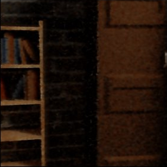
🖼 All Held-out Test Scenes (Ground Truth vs. Naive Sum vs. CNN vs. U-Net vs. Attn-Res)
Side-by-side view of all three test scenes evaluated across Ground Truth, Naive Sum, CNN, U-Net, and Attention-Residual U-Net reconstruction.
 Ground Truth
Ground Truth
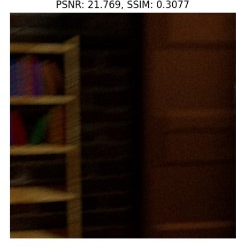
Naive Sum (21.77 dB)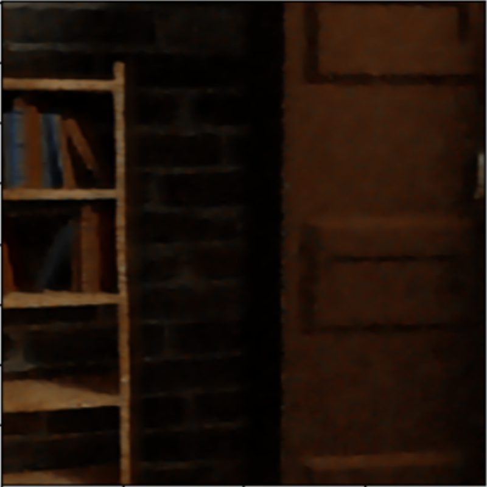
U-Net (29.82 dB)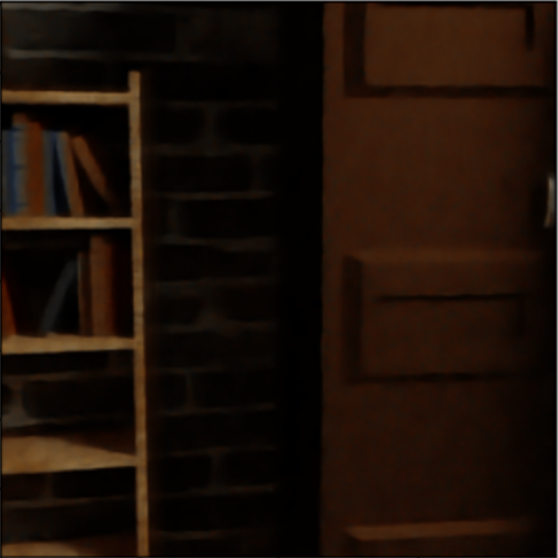
Attn-Res (31.04 dB)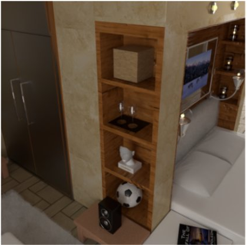
Ground Truth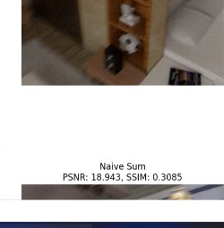
Naive Sum (22.15 dB)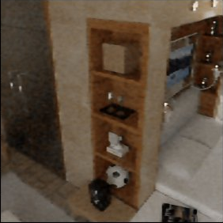
CNN (27.48 dB)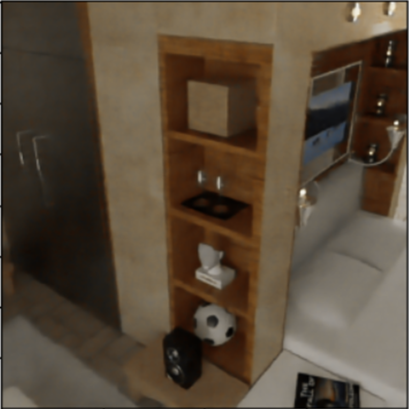
Attn-Res (31.80 dB)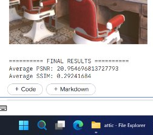
Ground Truth Naive Sum (18.94 dB)
Naive Sum (18.94 dB)
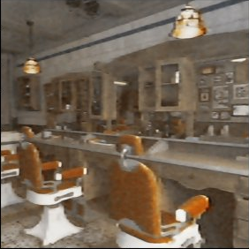
CNN (23.66 dB)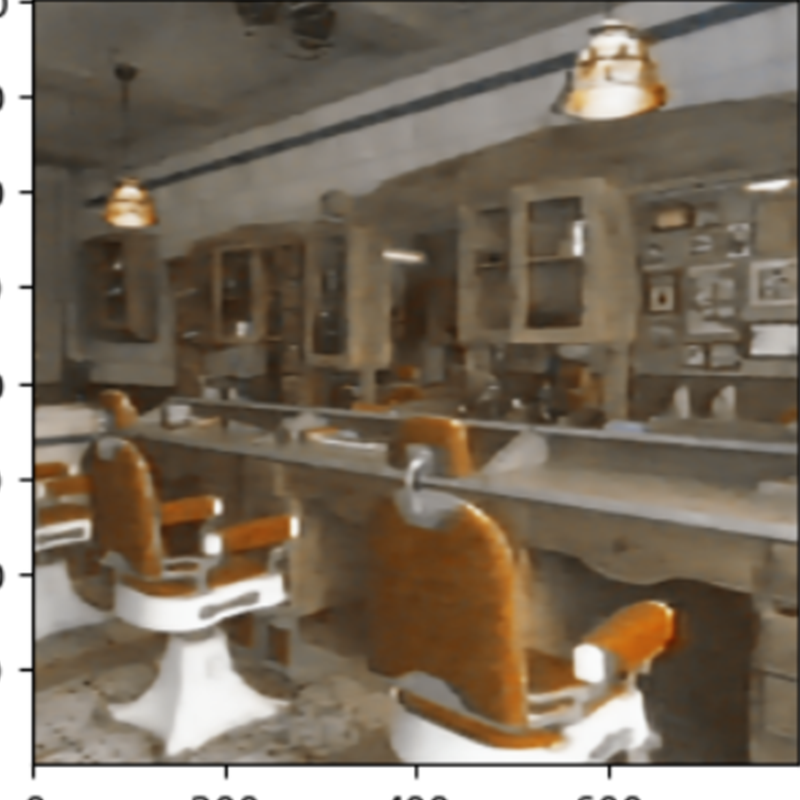
U-Net (23.99 dB)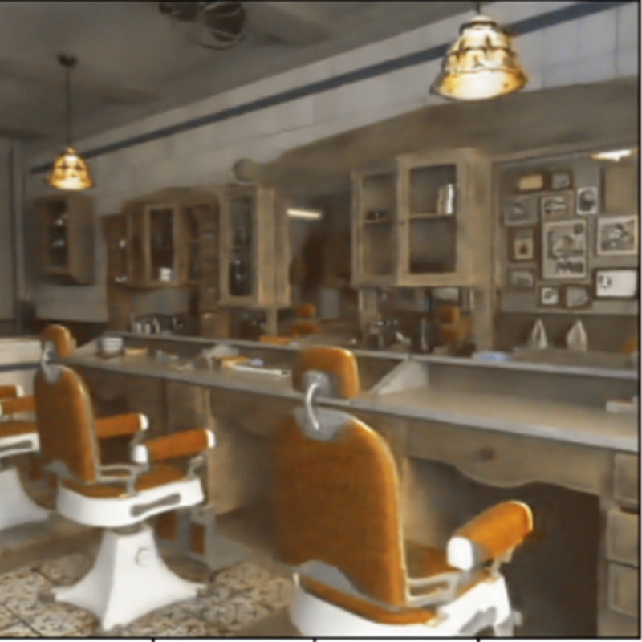
Attn-Res (26.18 dB)✔ Visual results loaded for Ground Truth, Naive Sum, CNN, U-Net, and Attention-Residual U-Net.
Numerical Results
| Architecture | PSNR (dB) ↑ | SSIM ↑ | Status / Role |
|---|---|---|---|
| Naive Sum Baseline (256 frames) | 20.955 | 0.2924 | Statistical Baseline Score |
| Convolutional Neural Network (CNN) | 26.517 | 0.7607 | Deep Learning Baseline (+5.56 dB) |
| U-Net | 27.493 | 0.7863 | Encoder-Decoder with Skips |
| Attn-Res U-Net ⭐ | 29.673 | 0.8407 | Proposed Model (Best) |
What Can Go Wrong
Implementation Constraints
- Each scene is loaded as one full 800×800 sample, so training requires substantial GPU memory
- All three models use fixed division by 255 for decoded photon frames and clean PNG targets
- VGG-16 perceptual loss requires downloading/loading frozen ImageNet weights before training
Dataset Limitations
- Only the first 50 sorted scene folders are used
- The first 3 scenes are held out for evaluation, so reported metrics have high scene-to-scene variance
- The scripts select the first matching
.npyand.pngfile in each scene directory
What We Cannot Claim
- The scripts do not establish causal superiority because they do not run controlled ablations
- Three held-out scenes are not sufficient to represent general deployment performance
- PSNR and plain SSIM do not measure every aspect of perceptual quality
Observed Error Pattern
- Barbershop is the hardest displayed scene: Attention-Residual U-Net reaches 26.18 dB and 0.8150 SSIM, below its attic and bachelors-quarters results
- Attention-Residual U-Net spans 26.18–31.80 dB across the three scenes, showing meaningful scene-level variation
- The metrics identify where performance is weaker, but the scripts do not log per-pixel error maps or confidence intervals
What We Found
Our training scripts reconstruct RGB images from the last 128 photon frames using three models: a plain CNN, a two-level U-Net, and an Attention-Residual U-Net.
The Attention-Residual U-Net combines residual blocks, attention-gated skip connections, and a three-level encoder-decoder. In the supplied three-scene results, it reports the strongest PSNR and SSIM values among the displayed models.
All three training scripts use the same composite objective: 0.7 L1 + 0.2 (1 − SSIM) + 0.1 VGG perceptual loss, optimized with Adam at a fixed learning rate of 1×10−4 for 50 epochs.
Key Takeaways
np.unpackbits and divide decoded photon frames by 255 before forming the 384-channel input
Reproduce Our Results
The complete training and baseline scripts are available in the repository. The steps below specify data access, preprocessing, splitting, training, and evaluation.
Get the Data
Place the dataset in a local directory or Kaggle input directory. Each scene directory must contain at least one photon cube (.npy) and one clean RGB image (.png):
# Expected organization
data/
train/
<scene_name>/
<photon_file>.npy # photon measurements, typically (1024, 800, 100, 3)
<clean_file>.png # clean RGB targetEnvironment Setup
conda create -n spc python=3.10
conda activate spc
pip install torch torchvision numpy pillow matplotlib scikit-image torchmetricsAll three training scripts also load pretrained VGG-16 ImageNet weights for the perceptual-loss term.
Data Split
import os
scenes = sorted(os.listdir(DATASET))[:50]
test_scenes = scenes[:3] # held-out evaluation scenes
train_scenes = scenes[3:] # remaining training scenesPreprocess a Scene
# Shared tensor layout in all model scripts
photon = raw[-128:]
# All three model scripts:
photon = np.unpackbits(photon, axis=2)
frames = [
frame.astype(np.float32) / 255.0
for frame in photon
]
# For every model:
frames = [torch.from_numpy(frame).permute(2, 0, 1) for frame in frames]
noisy = torch.cat(frames, dim=0).unsqueeze(0) # (1, 384, 800, 800)
clean = clean.astype(np.float32) / 255.0Train a Model
Set the DATASET constant in the selected script, then run one script at a time:
python cnn_training.py
python unet_training.py
python attn_res_unet_training.pyEach script trains for 50 epochs with Adam at 1e-4 and uses:
loss = 0.7 * L1 + 0.2 * (1 - SSIM) + 0.1 * VGGThe statistical reference is reproduced separately with naive_baseline.py. It uses the last 256 frames, requires the challenge's visionsim utilities, and reports the same PSNR/SSIM metrics.
Inference & Evaluation
After the 50th epoch, each script evaluates the final in-memory model on the 3 held-out scenes. It computes PSNR and plain SSIM, then displays the ground-truth and prediction images.
psnr = peak_signal_noise_ratio(clean_image, prediction_image, data_range=1.0)
ssim = structural_similarity(
clean_image,
prediction_image,
channel_axis=2,
data_range=1.0,
)